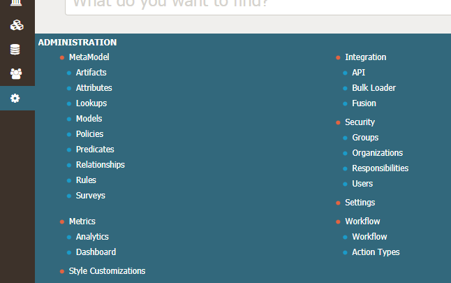

Infogix Data3Sixty is a highly customizable application, configured to support the specific requirements of your organization's governance strategy. This guide is aimed at users with administrator permissions, who are required to perform tasks such as establishing and maintaining the framework and integration of your individual implementation.
You can access the Administration menu from the left of the screen:

For data stewards and business owners who would like help with conducting day to day activities in the application, please see the user guide.
Next topic: Managing users and groups